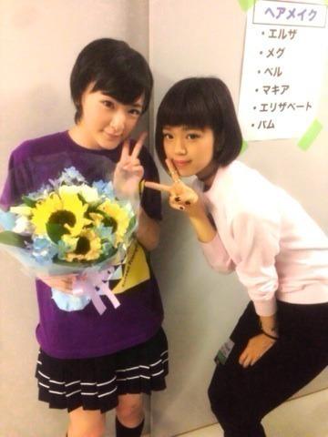

| 2014/06 08 Sun | プリンシパル8日、9 日目ヽ(・∀・)ノ |
うぇ〜いうぇいヽ(・∀・)ノ
生駒ちゃんだよっ！
前回のブログびっくり仰天、腰抜かすほどのコメントありがとうございますヽ(・∀・)ノ
正直。
ずっと
私はあまり皆さんに見られていないなって思っていました。
でもそれは違いました。
こんなにも沢山の素晴らしい仲間がいる。
メンバーも、スタッフさんも、ファンの皆さんも。
皆さんがいないと私はいない。
みんながいるから頑張れます！！
だからこれからもよろしくお願いします！
今回の総選挙で初めて、改めて私を好きになって下さった方がいたら。
その方にも私を伝えたいし、乃木坂46を好きになって欲しいっ！！
今、
1日経って、改めてびっくりしています！
きゃああ〜！
本当にありがとうございますヽ(・∀・)ノ
生駒ちゃん、がんばっていいんだよね⁈
そして、
昨日はプリンシパル8日目でした！
二回公演でしたが、私は夜の総選挙の為一回目だけ出ました。
エステルに立候補して
なんとっ！
エステルになりましたヽ(・∀・)ノ
劇中にも関わらず、みんなに総選挙がんばって来てね〜って応援してくれて。
それが力になって行くのを感じました。
ほんとみんな大好きちゅっちゅっ
今日9日目は
一回目も二回目もロザリオに立候補するものの、落ちましたヽ(・∀・)ノ
でも二回目はメグをやれてよかったな〜
⭐︎
それにハナエちゃんが来てくれましたっ

ハナエちゃんって呼んでって言ってくださって、なんか嬉しいけど緊張します〜

ちゃーん♡
ハナエちゃんにお花頂きましたヽ(・∀・)ノ
ハナエちゃんのライブ行きたいよ〜⭐︎
ハナエちゃんの声はとても安心するんですっ！
超絶かわいいしっ！♡
ではっ！
へばなっ！⭐︎
コメント(874)
2014/06/08 21:54